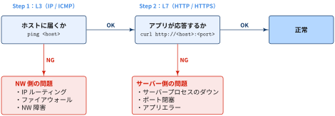
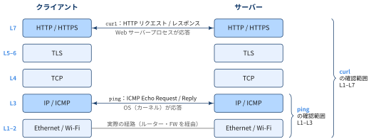
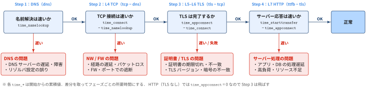
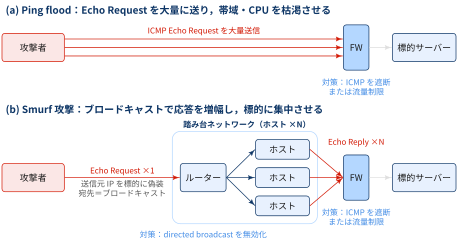

ネットワークの基礎: 通信はレイヤーで分かれている
ネットワーク通信は OSI 参照モデル という 7 階層のモデルで整理され，各レイヤーが独立した役割を担っています．下位レイヤーが動いていないと上位レイヤーは成立しません．
| OSI層 | 名称 | 役割 | 代表的なプロトコル |
|---|---|---|---|
| L7 | アプリケーション層 | アプリ間のやり取り | HTTP / HTTPS / DNS / SSH |
| L6 | プレゼンテーション層 | データ表現の変換（文字コード・圧縮・暗号化） | TLS / JPEG / UTF-8 |
| L5 | セッション層 | 通信の開始・維持・終了の管理 | TLS セッション / RPC |
| L4 | トランスポート層 | ポート単位の通信・到達保証 | TCP / UDP |
| L3 | ネットワーク層 | ホスト間のルーティング | IP / ICMP |
| L2 | データリンク層 | 同一ネットワーク内の転送 | Ethernet / ARP |
| L1 | 物理層 | 電気信号・光・電波 | ケーブル / Wi-Fi |
実際のインターネットで使われている TCP/IP モデル は 4 階層で，OSI の L5〜L7 をまとめて「アプリケーション層」として扱います． そのため L5・L6 の機能は独立したプロトコルとして現れることが少なく，HTTP や SSH などのアプリケーションプロトコルや TLS の中に吸収されています．
- L6（プレゼンテーション層）: 文字コード（UTF-8）や画像形式（JPEG），暗号化といった「データをどう表現するか」を扱う層です．HTTPS の暗号化を担う TLS はここに分類されることが多いです．
- L5（セッション層）: 通信の「開始・維持・終了」を管理する層です．TLS のハンドシェイクやセッション再開，RPC の呼び出し管理などが該当します．
疎通確認の文脈では，「L4（TCP）は繋がるが TLS ハンドシェイクで失敗する」= 証明書や暗号スイートの問題，と切り分けられる点が実用上のポイントです．
疎通確認のコマンドは「どのレイヤーまで到達できているか」を切り分けるための道具です．たとえば次のように，レイヤーごとに「届いているか」を確認していくと原因の位置が特定できます．
- L3 でホストに届かない → IP ルーティング / ファイアウォール / NW 障害
- L3 は届くが L7 が応答しない → サーバープロセスのダウン / ポート閉塞 / アプリエラー

ping と curl は確認するレイヤーが違う
ping と curl はどちらも「疎通確認」に使われますが，確認しているレイヤーが異なります．
| コマンド | 確認対象 | OSI層 | 例 |
|---|---|---|---|
ping |
ホスト到達性 | L3 (IP) | サーバーに届くか |
curl |
アプリケーション応答 | L7 (HTTP/HTTPS) | Webサービスが動いているか |

ping: L3 (IP) の到達性を確認する
ping は ICMP という L3 のプロトコルを使い，相手ホストに「Echo Request」を送って「Echo Reply」が返ってくるかを確認します．HTTP サーバーが動いているかどうかは一切関係なく，IP レベルでパケットが往復できるかだけを見ます．
# ホストに IP レベルで届くか（4回だけ送信）
ping -c 4 example.comPING example.com (93.184.216.34): 56 data bytes
64 bytes from 93.184.216.34: icmp_seq=0 ttl=56 time=11.5 ms
64 bytes from 93.184.216.34: icmp_seq=1 ttl=56 time=11.2 ms
...
4 packets transmitted, 4 packets received, 0.0% packet loss
round-trip min/avg/max = 11.2/11.4/11.5 mstime は往復にかかった時間 (RTT)，packet loss はパケットの欠落率です．
curl: L7 (HTTP/HTTPS) の応答を確認する
curl は実際に HTTP/HTTPS リクエストを送り，Web サービスがアプリケーションとして 応答するかを確認します．TCP 接続 (L4)，TLS ハンドシェイク (HTTPS の場合)， HTTP レスポンスまでの一連の流れが成立して初めて成功します．
# HTTP ステータスコードだけを確認する
curl -o /dev/null -s -w '%{http_code}\n' https://example.com
# レスポンスヘッダを確認する（-I は HEAD リクエスト）
curl -I https://example.comHTTP/2 200
content-type: text/html; charset=UTF-8
...ステータスコード 200 が返れば L7 まで疎通しています．000 の場合は接続そのものが 確立できていない (TCP / TLS / DNS のいずれかで失敗) ことを示します（see Appendix: 主な HTTP ステータスコード）．
1 つの curl は複数レイヤーを通過している
curl は「L7 の確認」と書きましたが，実際には下位レイヤーを順番に積み上げてから HTTP 応答に到達します．-w でフェーズ別の所要時間を出力すると，どのレイヤーまで 進んだか・どこで時間がかかっているかが分かります．
curl -o /dev/null -s -w "
dns: %{time_namelookup}s
tcp: %{time_connect}s
tls: %{time_appconnect}s
ttfb: %{time_starttransfer}s
total: %{time_total}s
http_code: %{http_code}
" https://example.com各フェーズと OSI 層の対応は次の通りです．
curl 変数 |
フェーズ | 何が起きているか | |
|---|---|---|---|
time_namelookup |
DNS 解決 | ドメイン名 → IP アドレス | - |
time_connect |
TCP 接続 | 3-way handshake の完了 | L4 (TCP) |
time_appconnect |
TLS ハンドシェイク | 暗号化セッションの確立 (HTTPS のみ) | L5–L6 (セッション/プレゼンテーション) |
time_starttransfer |
TTFB | リクエスト送信〜最初の応答バイト受信 | L7 (HTTP) |
time_total |
全体 | 全フェーズの合計 | — |
time_* はフェーズの長さではなく「開始からの累積時間」
これらの値はリクエスト開始時点を 0 とした累積値です (time_namelookup ≤ time_connect ≤ time_appconnect ≤ time_starttransfer ≤ time_total)． 個々のフェーズの所要時間が欲しいときは差分を取ります．
- TCP 接続だけの時間 =
time_connect−time_namelookup - TLS だけの時間 =
time_appconnect−time_connect - サーバー処理時間 =
time_starttransfer−time_appconnect
この内訳を見ると，ping (L3) では見えない上位レイヤーのどこで詰まっているかを 切り分けられます．たとえば dns だけ極端に遅ければ DNS の問題，tls で止まれば 証明書 / TLS ネゴシエーションの問題，ttfb が長ければサーバー側の処理が遅い， と判断できます．

time_* の差分でフェーズごとの所要時間を出し，下位フェーズから順に確認する．最初に遅いフェーズが原因のレイヤー切り分けの考え方
- 「つながらない」ときは L3 → L4 → L7 の順で確認して，原因が絞り込む
| 症状 | 推定される原因 | 確認コマンド |
|---|---|---|
ping は通るが curl が 000 |
サーバープロセス停止 / ポート閉塞 / TLS 失敗 | curl -v, nc -vz host port |
| ping も curl も通らない | NW 障害 / ファイアウォール / DNS 解決失敗 | ping, dig, traceroute |
| ping は通らないが curl は通る | ICMP がブロックされているだけ（正常なことも多い） | curl -I で実応答を確認 |
ping が通らない＝障害，とは限らない
セキュリティ上の理由で ICMP (ping) をブロックしているサーバーは珍しくありません． その場合 ping は失敗しますが，HTTP は正常に応答します．「ping が通らない」だけで サービス停止と判断しないようにしましょう．L7 の確認には curl を使います．
Exmaple 1 ICMP を悪用した DoS 攻撃への対策
ICMP をブロックする理由の一つが DoS 攻撃への対策です．ICMP は「届いたら応答を返す」という性質を持つため，攻撃に悪用されやすいプロトコルです．
- Ping flood: 攻撃者が ICMP Echo Request を大量に送りつけます．標的は1件ずつ Echo Reply を返そうとするため，回線帯域や CPU が使い果たされ，正規の通信を処理できなくなります．
- Smurf 攻撃: 攻撃者は 送信元 IP を標的のアドレスに偽装 した Echo Request を，踏み台ネットワークの ブロードキャストアドレス 宛てに送ります．ネットワーク内の N 台のホストが一斉に Echo Reply を返すため，攻撃者の1パケットが N 倍に 増幅 され，返信がすべて標的に集中します．

対策は，標的側の FW で ICMP Echo を遮断する，または流量を制限する ことです．Smurf 攻撃に対しては，踏み台側のルーターで directed broadcast（外部からのブロードキャスト宛てパケットの転送）を無効化 するのも有効です．現在のルーターでは既定で無効になっています．
こうした理由から，外部公開サーバーやクラウドでは ICMP Echo を受け付けない設定が一般的です．その結果，サービスは正常に動いているのに ping だけが失敗する，という状況が生まれます．
Appendix: 主な HTTP ステータスコード
curl -w '%{http_code}' で返ってくる 3 桁の番号は，先頭の数字でおおまかな意味が決まります． 000 以外の何かが返ってきた時点で，L7 までは疎通している（サーバーが HTTP で応答している）点に注意してください．
| 分類 | 意味 | 切り分けの目安 |
|---|---|---|
000 |
HTTP 応答なし（curl 独自の値） | DNS / TCP / TLS の段階で失敗．L7 に届いていない |
1xx |
情報 | 処理の継続中．疎通確認で見ることはほぼない |
2xx |
成功 | 正常 |
3xx |
リダイレクト | 正常．curl -L で転送先までたどる |
4xx |
クライアント側エラー | リクエスト（URL・認証・権限）を見直す |
5xx |
サーバー側エラー | アプリ・バックエンド・プロキシを調べる |
| コード | 名前 | よくある原因・意味 |
|---|---|---|
200 |
OK | 正常に応答 |
201 |
Created | POST などでリソースが作成された |
204 |
No Content | 成功したが本文なし（ヘルスチェックや DELETE で使われる） |
301 |
Moved Permanently | 恒久的な移転．http → https への転送でよく見る |
302 |
Found | 一時的な転送．ログイン画面へのリダイレクトなど |
304 |
Not Modified | キャッシュが有効なので本文を返さない |
400 |
Bad Request | リクエストの書式が不正（パラメータ・JSON の誤り） |
401 |
Unauthorized | 認証が必要，または認証情報が誤っている |
403 |
Forbidden | 認証はできたが権限がない．IP 制限・WAF によるブロックもここ |
404 |
Not Found | パスが存在しない．URL の誤りやルーティング設定の漏れ |
405 |
Method Not Allowed | そのパスで使えない HTTP メソッド（GET / POST の取り違え） |
408 |
Request Timeout | クライアントからの送信が遅く，サーバーが待ちきれなかった |
429 |
Too Many Requests | レート制限に達した．時間を置いて再試行する |
500 |
Internal Server Error | アプリ内部の例外．アプリのログを確認する |
502 |
Bad Gateway | プロキシ・LB の先のアプリが不正な応答を返した，または落ちている |
503 |
Service Unavailable | 過負荷・メンテナンス中．LB 配下に正常なサーバーがない場合も |
504 |
Gateway Timeout | プロキシ・LB の先のアプリが時間内に応答しなかった |
502 / 503 / 504 を返しているのは，多くの場合アプリ本体ではなく 手前のリバースプロキシやロードバランサー（nginx・ALB など）です． つまり「プロキシまでは L7 で疎通しているが，その先のアプリとの間で問題が起きている」と切り分けられます．
📘 用語集
glossary:
- def: OSI参照モデル
description: |
ネットワーク通信の機能を 7 つの階層に分けて整理したモデル．下位層 (物理・データリンク・ネットワーク) から上位層(トランスポート・セッション・プレゼンテーション・アプリケーション)まであり，各層が独立した役割を持つ．
- def: ICMP (Internet Control Message Protocol)
description: |
IP (L3) で動作する制御・エラー通知用のプロトコル．`ping` は ICMP のEcho Request / Echo Reply を使ってホストの到達性を確認する．
- def: ping
description: |
ICMP を使ってホストに到達できるか (L3) を確認するコマンド．往復時間 (RTT) やパケットロス率を測定できる．HTTP サーバーの稼働とは無関係．
- def: curl
description: |
HTTP/HTTPS をはじめとする各種プロトコルでリクエストを送る CLI ツール．Web サービスがアプリケーションレベル (L7) で応答するかを確認できる．
- def: RTT (Round-Trip Time)
description: |
パケットが送信先まで往復するのにかかる時間．`ping` の `time` 値として表示される．
- def: DNS解決 (Name Resolution)
description: |
ドメイン名 (例 `example.com`) を IP アドレスに変換する処理．curl の`time_namelookup` で計測でき，ここが遅い・失敗する場合は DNS 側の問題．
- def: TLSハンドシェイク
description: |
HTTPS 通信の冒頭で暗号化セッションを確立する手順 (証明書検証・鍵交換)．curl では `time_appconnect` として計測される．OSI 上はセッション/プレゼンテーション層(L5–L6) 相当．
- def: TTFB (Time To First Byte)
description: |
リクエスト送信から最初の応答バイトを受信するまでの時間．curl の`time_starttransfer` に対応し，サーバー側の処理時間 (L7) の目安になる．
- def: TCP / UDP
description: |
トランスポート層 (L4) のプロトコル．TCP は到達保証・順序保証つきの接続型，UDP は保証のない非接続型．HTTP は TCP の上で動く．
- def: HTTPステータスコード
description: |
HTTP レスポンスの結果を表す 3 桁の番号．`200` は成功，`4xx` はクライアント側エラー，`5xx` はサーバー側エラー．curl の `000` は HTTP 応答に到達する前に接続が失敗したことを示す．